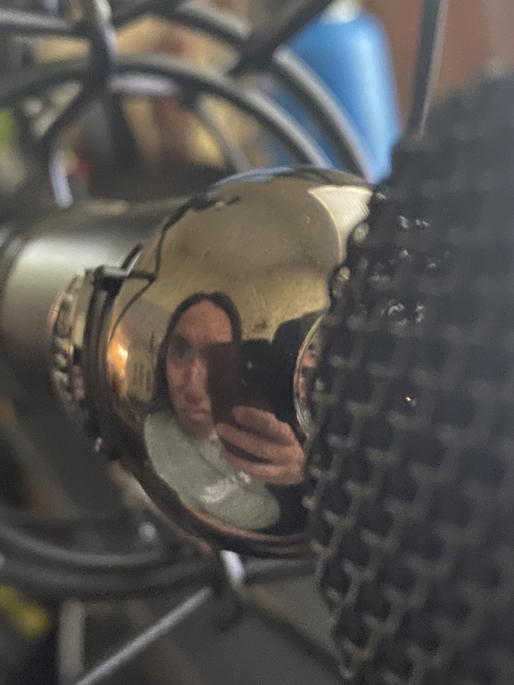
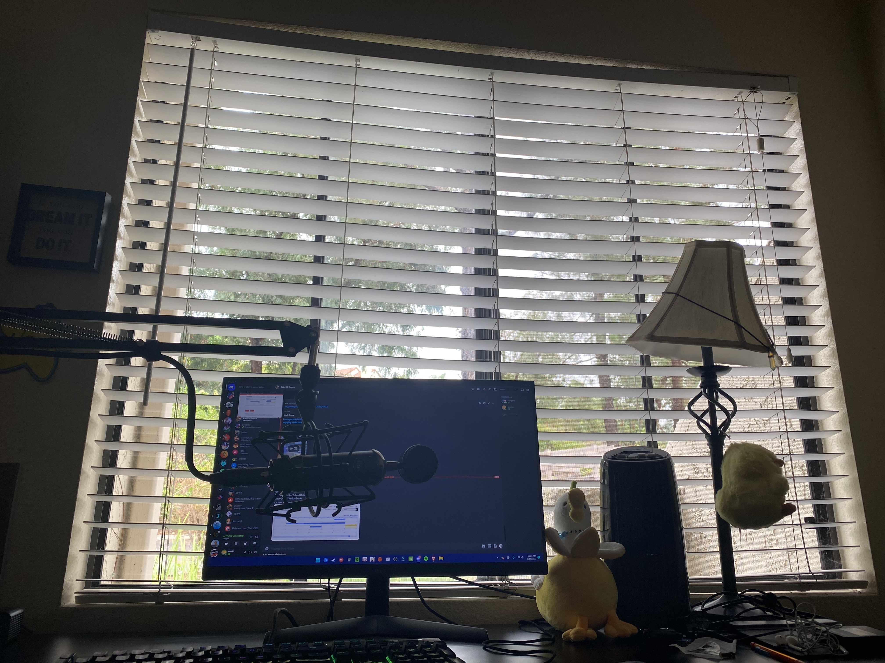
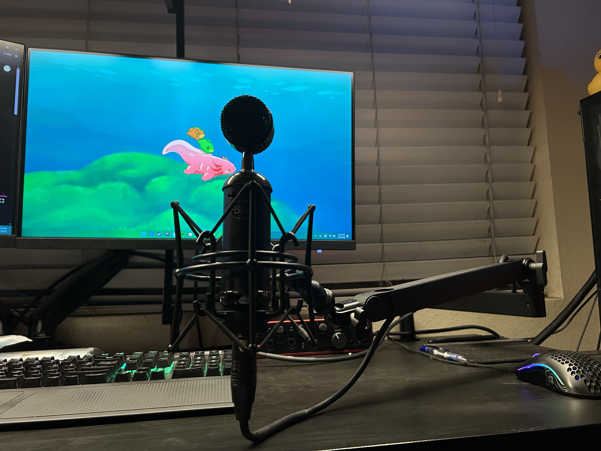

Hyperdash
TL;DR
{{ TLDR Summary }}
The Vision
During long car rides I'd get lost in podcasts like Ear Biscuits, Dear Hank and John, Watchtime, and Distractible. I'd listen to these funny and charismatic people ramble on for hours on end, but eventually I wondered whether I could start my own podcast. I could talk about whatever I was interested in, which probably ended up being videogames, and Hyperdash was born.
What's in a name
Hyperdash was named after a move from the speedrunning community of a popular indie platformer game, Celeste.
Apple Podcasts
Amazon Podcasts
YouTube
Josh, my co-host for the later part of Hyperdash's run, was kind enough to join me and talk about Hyperdash. Hey Josh!
hallo eddie!
So Josh's font will look like that and my font will look like this.
We needed a new logo, and since the podcast was about video games, I just put the name on a simple pattern in Photoshop and put the logos of our favorite games on there.

Studio
There's not a lot of equipment you need to podcast - it's pretty much exactly what you expect. A microphone, audio editing software, and some way to upload your podcasts.
The microphone I use was the same one I use to stream and record YouTube videos (read more about those adventures here). It's the Fifine K669 and I've got it on a budget mic stand.
Those are affiliate links, by the way. I may get a small commission with no extra cost to you. The rest of the amazon links on this page are all also affiliate links.
Upgrades
I've since upgraded to the Beacn mic, pictured above, but they look mostly the same, except the Beacn mic is about twice the size of the Fifine K669. Also, my Fifine K669 happened to be a disgusting color only describable as dark pink—because, of course, the black one was more expensive.
Anyways, the mic and the mic stand are both pretty cheap, but they get the job done. Since I use Adobe Audition and its audio effects and filters for processing the audio, I can make it sound a lot better than the price tag indicates.
Decorations
I added those decorations later: a small D.Va backpack hanger and a Princess Celestia figurine.
my mic setup for Hyperdash wasn't anything too special. but to give a bit of backstory, before covid hit, my dad purchased a Blue Blackout Spark SL to potentially record some of his music with a couple of his friends.
but alas, covid changed the entire world—and my potential microphone. fast forward two years and as i was searching for an upgrade from my Razer Kraken X headset, i remembered a microphone in a cabinet that never got the chance to be used.
ever since then, i've used this mic for more than Hyperdash: calls, recordings for eddie's YouTube channel (this one was my favorite, but he can tell you more about that), and your typical microphone uses as well.
back then, i had my mic mounted on some cheap amazon mic stand, but i've since upgraded to the Wave Mic Arm LP from Elgato; definitely more sturdy than my old one.
Process
Our favorite moments
Farewell (for now)
ENGL 384
{{ Process Paragraph 3 }}
{{ Process Paragraph 4 }}
{{ Process Paragraph 5 }}
{{ Process Paragraph 6 }}
{{ Process Paragraph 7 }}